De ce management strategic în sănătate?
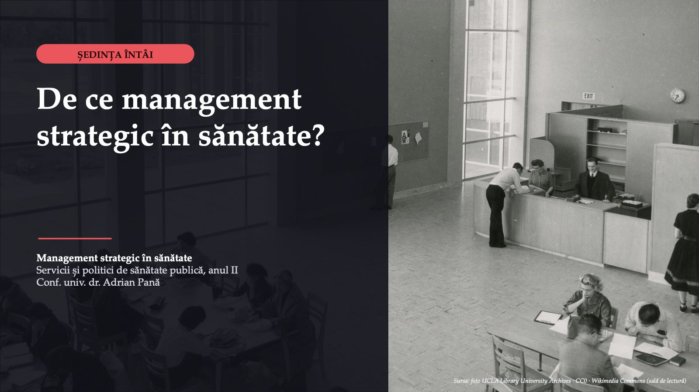
1 / 45Titlul acestei ședințe pune o întrebare: de ce management strategic în sănătate? Începem cu o situație pe care o cunoașteți din proprie experiență: sesiunea.
De ce management strategic în sănătate?
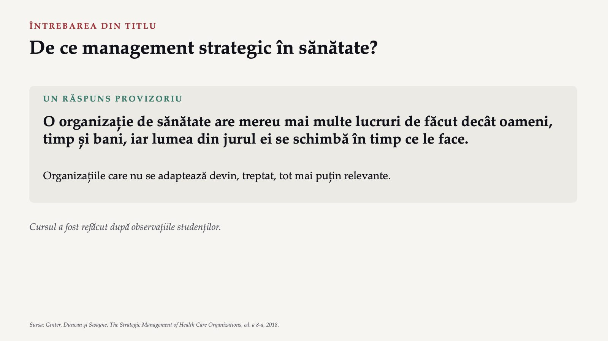
2 / 45Un prim răspuns, provizoriu, se poate da încă de acum. O organizație de sănătate are întotdeauna mai multe lucruri de făcut decât oameni, timp și bani, iar lumea din jurul ei se schimbă în timp ce le face.
Două ore, de la sesiune la spitalul județean
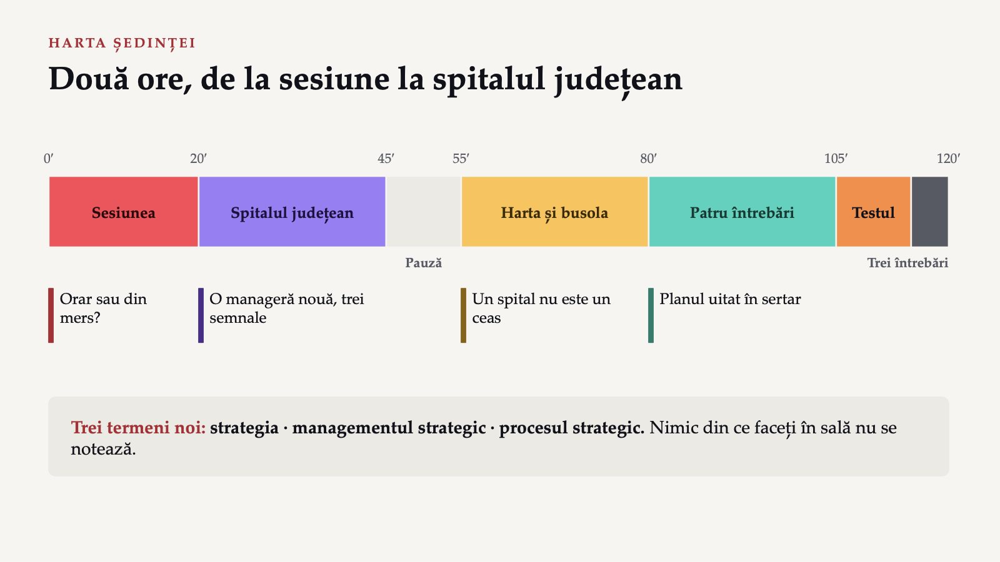
3 / 45Jumătate din timp lucrați voi: votați, discutați în perechi, argumentați în tabere și urmăriți o scenă jucată de colegi. Nimic din ce faceți în sală nu se notează.
50%
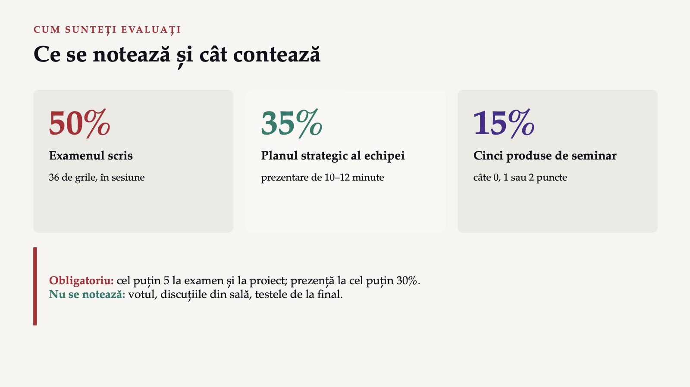
4 / 45Votul pe telefon, discuțiile din sală și testele formative de la sfârșitul cursurilor nu se notează. La restanță sau la mărire refaceți numai examenul; notele de cel puțin 5 la proiect și la produse se păstrează.
Cum vă pregătiți, de obicei, pentru sesiune?
 5 / 45
5 / 45Peste câteva săptămâni începe sesiunea. Unii colegi își fac din prima săptămână un orar; alții învață din mers. Se poate face și câte puțin din amândouă.
Dintre voi doi, cine are o strategie pentru sesiune?
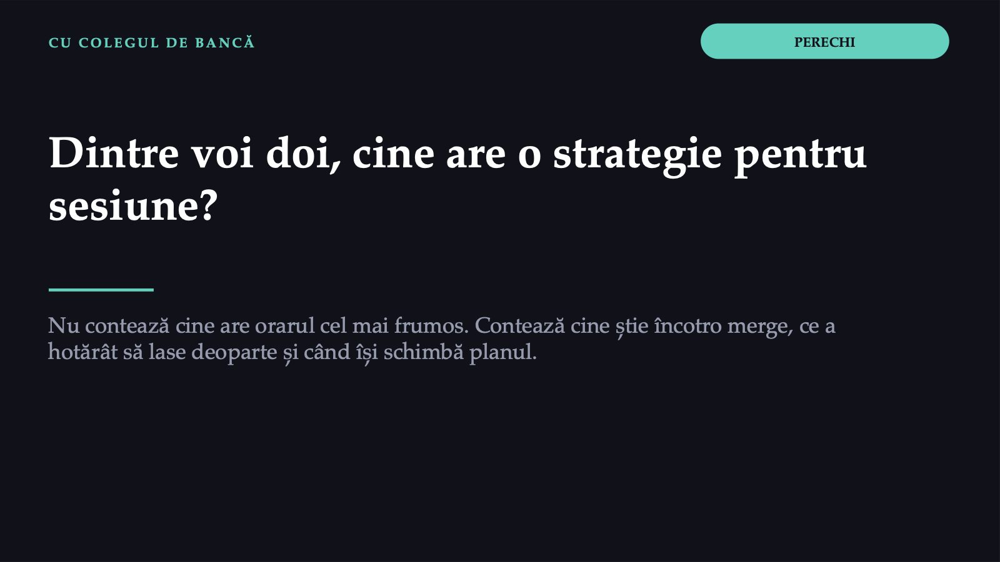
6 / 45Cine își face un orar și nu îl schimbă niciodată riscă să piardă zile prețioase cu un examen care s-a dovedit mai ușor. Cine învață numai din mers ajunge în ultima săptămână cu două examene grele și fără timp pentru niciunul.
O strategie nu este un orar desenat în culori
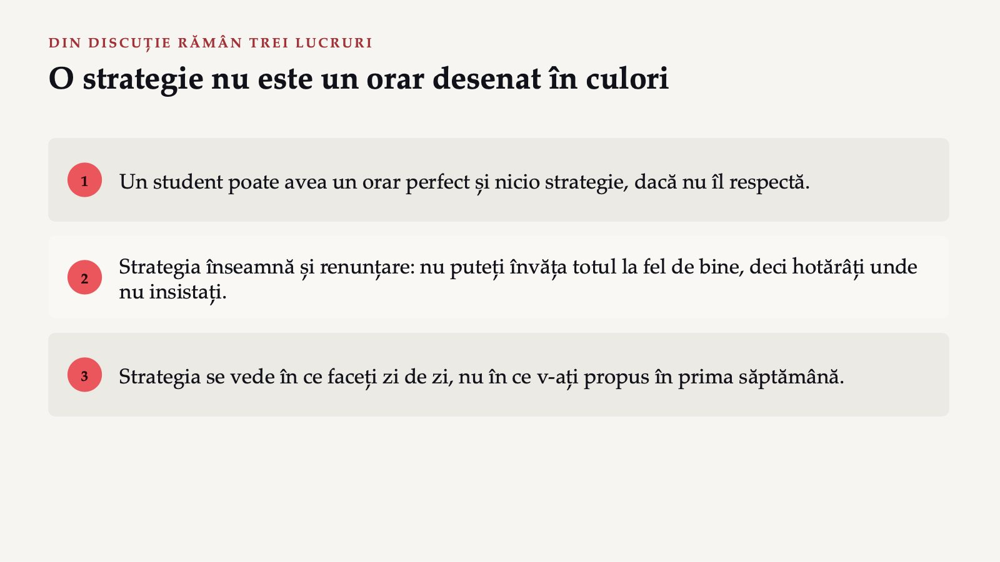
7 / 45Din discuție merită să rămână trei lucruri: o strategie nu înseamnă un orar desenat în culori, o strategie înseamnă și renunțare, iar strategia se vede în ce faceți zi de zi.
Un spital trăiește sesiunea voastră, la scară mare
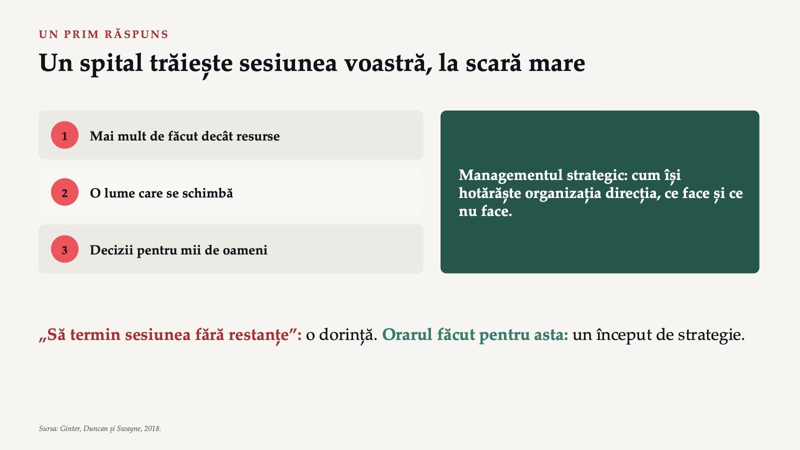
8 / 45Un spital, o direcție de sănătate publică sau o casă de asigurări de sănătate se află zilnic în situația voastră din sesiune, la o scară mult mai mare. Managementul strategic nu înseamnă numai reacție la schimbare: organizația își imaginează ce ar putea deveni.
Ce vă vine în minte când auziți cuvântul „strategie”?
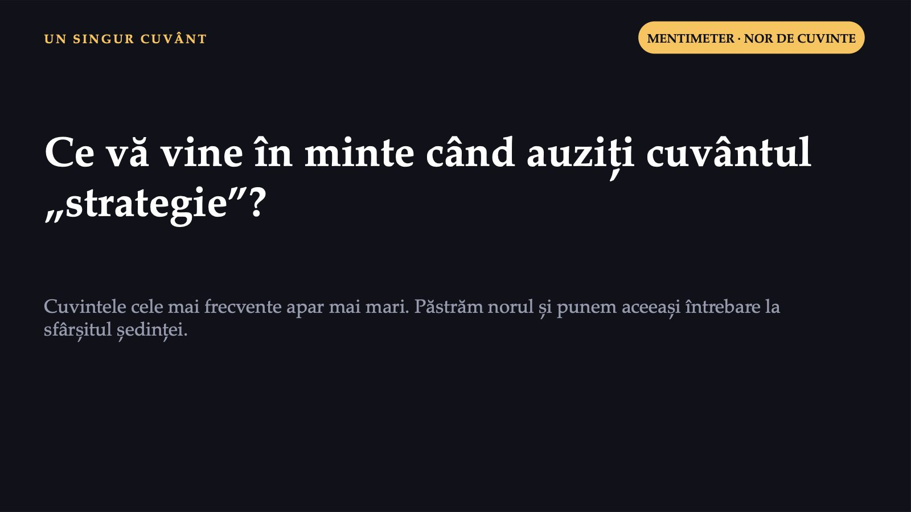
9 / 45Un singur cuvânt, primul care vă vine în minte. Norul se păstrează până la sfârșitul ședinței.
Strategia
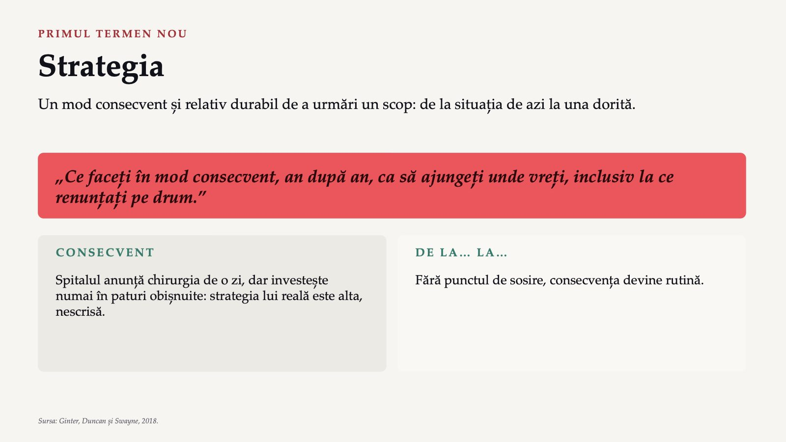
10 / 45Pentru sesiune, strategia nu este orarul de pe perete, ci regula pe care o urmați de fiecare dată când trebuie să alegeți: de exemplu, examenul cu cele mai multe credite primește primele zile.
Spitalul și noua lui manageră
![SITUAȚIE CONSTRUITĂ PENTRU CURS Spitalul și noua lui manageră Managera nouă a câștigat concursul. În primele luni, pe biroul ei ajung trei semnale. Spitalul nu există; povestea nu are cifre. SEMNALUL 1 · URGENȚELE Tot mai mulți pacienți în vârstă, cu boli cronice, nevăzuți la timp în altă parte. SEMNALUL 2 · RAPORTUL LUNAR Paturi goale pe unele secții, pacienți mutați pe altele. Fiecare șef își apără paturile. SEMNALUL 3 · ORAȘUL O clinică privată nouă a atras medici cu experiență și pacienții care își permit.](diapozitive/C01/011.jpg) 11 / 45
11 / 45Situația este construită pentru acest curs. Spitalul nu există, nu are nume și nu descrie o unitate reală; povestea nu conține cifre, pentru că orice cifră ar fi inventată.
Cu ce începe noua manageră?
 12 / 45
12 / 45În același timp, consiliul județean, care deține spitalul, propune o clădire nouă, cu mai multe paturi. Este o propunere populară și ușor de anunțat. O singură variantă.
Problema lor: sunt luate separat
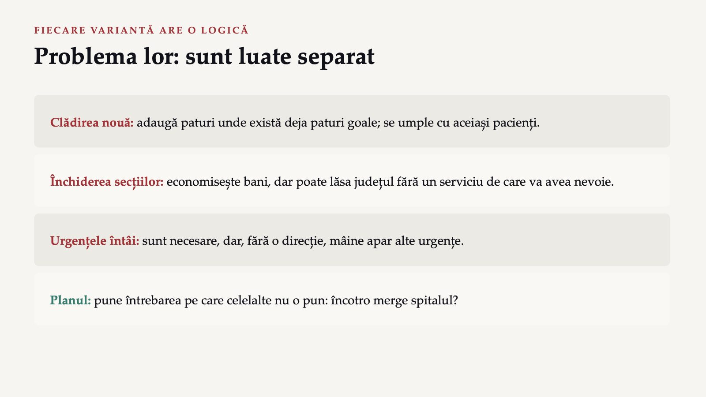
13 / 45Primele trei variante nu sunt greșite în sine; problema lor este că sunt luate separat. Fără o direcție, managera ajunge să conducă spitalul ca studentul care învață numai din mers.
Care dintre cele trei semnale vi se pare cel mai greu de rezolvat?
14 / 45Gândiți-vă la cine pierde și cine câștigă dacă managera pune un semnal pe primul loc.
Legea cere un plan. Nu spune ce să scrie în el.
![CE AR FACE MANAGERA Legea cere un plan. Nu spune ce să scrie în el. LEGEA NR. 95/2006 Contract de management pe cel mult 4 ani; evaluare anuală, pe baza indicatorilor de performanță. ORDINUL NR. 1384/2010 Managerul elaborează planul de dezvoltare a spitalului pe perioada mandatului, pe baza nevoilor populației deservite. Planul îl pregătește comitetul director; consiliul de administrație dezbate strategia. Aici începe managementul strategic. Sursa: Legea nr. 95/2006; Ordinul ministrului sănătății nr. 1384/2010 (modelul-cadru al contractului de management).](diapozitive/C01/015.jpg) 15 / 45
15 / 45Înainte de deciziile mari, managera are nevoie să înțeleagă ce se întâmplă, să aleagă o direcție și să stabilească reguli după care se vor lua deciziile mici. Nu este o amânare, ci singurul mod în care cele trei semnale pot fi tratate ca părți ale aceleiași probleme. Legea spune că managera trebuie să aibă un plan; nu spune ce să scrie în el.
Managementul strategic
![AL DOILEA TERMEN NOU Managementul strategic Procesul de gândire strategică, de planificare strategică și de activitate strategică (punerea în practică, urmărirea și corectarea strategiei, zi de zi), prin care o organizație își stabilește direcția și își realizează misiunea și viziunea. „A conduce o organizație cu direcție: te gândești, hotărăști, faci și te corectezi.” te gândești → hotărăști → faci → te corectezi Sursa: după Ginter, Duncan și Swayne, 2018 („strategic thinking”, „strategic planning”, „strategic momentum”); denumirile românești sunt ale cursului.](diapozitive/C01/016.jpg) 16 / 45
16 / 45În cuvinte de zi cu zi, managementul strategic înseamnă a conduce o organizație cu direcție: te gândești, hotărăști, faci și te corectezi. Definiția are trei părți, pe care Ginter, Duncan și Swayne le numesc, în engleză, „strategic thinking”, „strategic planning” și „strategic momentum”. În acest curs, ele se numesc gândirea strategică, planificarea strategică și activitatea strategică.
A gândi, a planifica, a pune în practică
![TREI PĂRȚI CARE SE SPRIJINĂ UNA PE ALTA A gândi, a planifica, a pune în practică Gândirea Planificarea Activitatea Gândirea strategică: ce s-a schimbat? Semnalele pot avea o cauză comună. Planificarea strategică: orarul; în spital, planul pe durata mandatului. Activitatea strategică: zi de zi: vă țineți de orar și îl schimbați la nevoie. Săgețile au două sensuri: un raport lunar o întoarce pe manageră la gândire. Sursa: schemă redesenată după Ginter, Duncan și Swayne, 2018, capitolul 1; denumirile românești sunt ale cursului.](diapozitive/C01/017.jpg) 17 / 45
17 / 45Cele trei părți nu sunt etape care se termină una după alta. Autorii le desenează legate prin săgeți cu două sensuri, pentru că oricare dintre ele le poate relansa pe celelalte. O idee nouă a unui șef de secție poate întoarce întreaga echipă la planificare.
Câte dintre spitalele României sunt private?
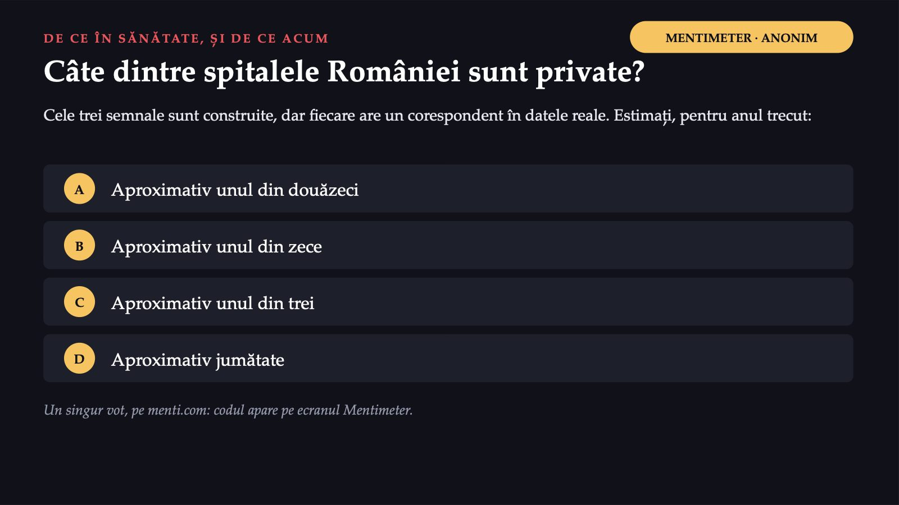
18 / 45Cele trei semnale din caz sunt construite, dar nu sunt inventate din nimic. Fiecare are un corespondent în datele reale despre sistemul românesc de sănătate.
20,3%
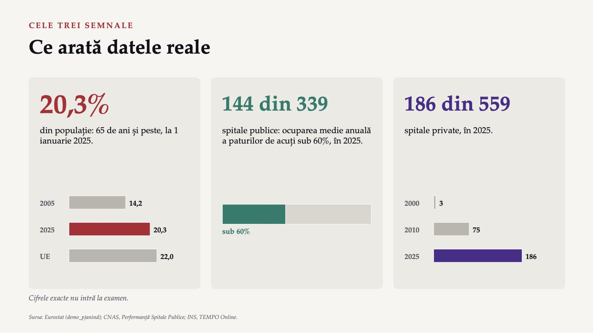
19 / 45În ultimele două decenii, ponderea persoanelor de 65 de ani și peste a crescut de la aproximativ una din șapte persoane la aproximativ una din cinci. În ultimul sfert de secol, spitalele private au crescut de la câteva unități la aproximativ o treime din numărul total de spitale.
Cinci feluri de schimbări
![UNDE SĂ PRIVEASCĂ O CONDUCERE Cinci feluri de schimbări legislative și politice economice sociale și demografice tehnologice concurențiale Clasificarea obligă conducerea să treacă prin fiecare categorie. Cursul următor pornește de aici. STRATEGIA NAȚIONALĂ DE SĂNĂTATE 2023–2030 Sistemul nu a avut o abordare strategică susținută; politicile au fost mai ales reactive. Sistemul românesc a învățat, așadar, de prea multe ori, din mers. Sursa: Ginter, Duncan și Swayne, 2018; Strategia națională de sănătate 2023–2030.](diapozitive/C01/020.jpg) 20 / 45
20 / 45Ginter, Duncan și Swayne grupează schimbările care afectează sănătatea în cinci categorii. Strategia națională de sănătate constată că sistemul nu a avut până atunci o abordare strategică susținută, iar politicile au fost mai ales reactive.
„Spitalele românești sunt aglomerate pentru că avem prea puține paturi.”
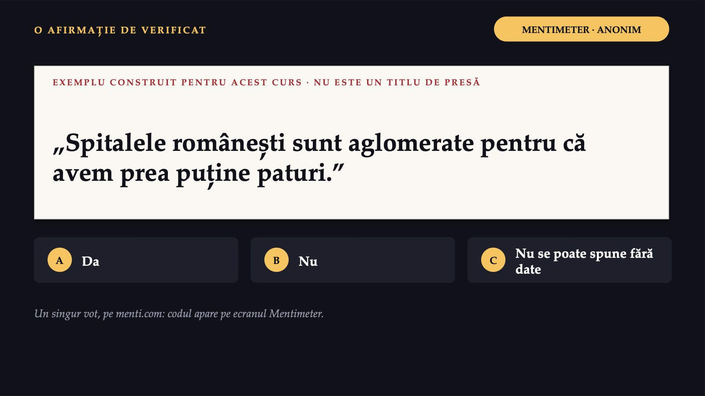
21 / 45Pe ecran este o afirmație despre spitale, construită pentru acest curs, ca exemplu. Votați, apoi discutăm ce date ar trebui consultate.
Datele țării nu susțin explicația „prea puține paturi”
![CE SPUN DATELE Datele țării nu susțin explicația „prea puține paturi” Bulgaria 870,32 Germania 758,59 România 730,74 Media UE 507,35 paturi la 100 000 de locuitori, 2024 Sursa: foto City of Minneapolis Archives · CC BY 2.0 · Wikimedia Commons (arhivă) La peste patru din zece spitale publice, ocuparea medie anuală a paturilor de acuți a fost în 2025 sub trei cincimi. Altă explicație, de verificat la fiecare spital: împărțirea serviciilor. O clădire nouă cu mai multe paturi ar putea răspunde afirmației, nu problemei. Cifrele exacte nu intră la examen. Sursa: Eurostat (hlth_rs_bds1); CNAS, Performanță Spitale Publice; OCDE și Observatorul European, 2025.](diapozitive/C01/022.jpg) 22 / 45
22 / 45Profilul de țară din 2025 arată că internările potențial evitabile pentru boli cronice sunt în România de multă vreme printre cele mai mari din UE, iar medicii de familie au un rol slab în urmărirea bolilor cronice. Media țării nu spune, în schimb, cât de pline sunt secțiile unui anumit spital județean. Tocmai această întrebare o are de rezolvat managera din caz. Întrebarea „ați crede această afirmație?” se va repeta în cursurile următoare.
Zece minute de pauză
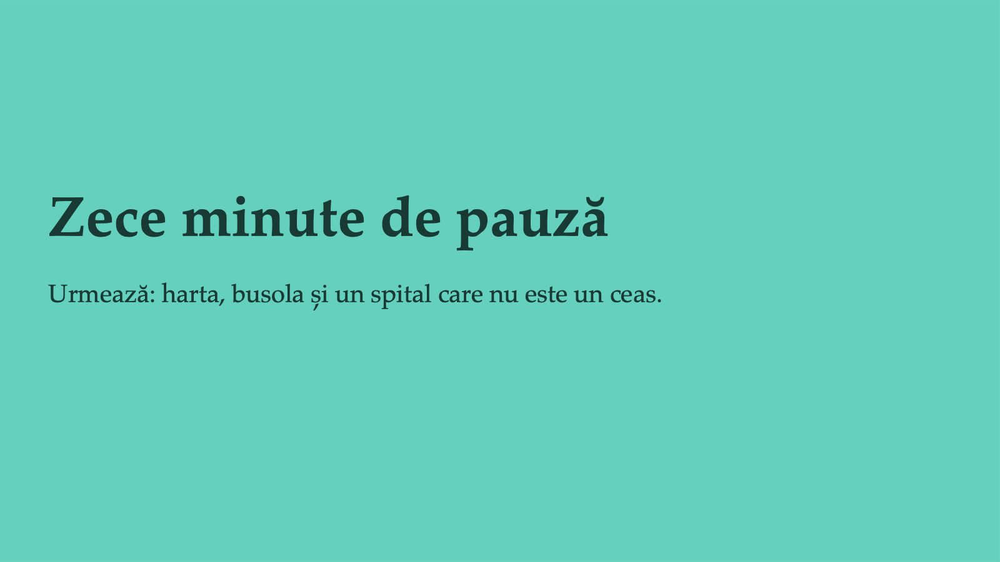
23 / 45Cât de strict se urmează planul?
 24 / 45
24 / 45Hărțile se corectează pe drum, pe măsură ce apar informații noi. Fără niciun model sau hartă, însă, conducătorii riscă să devină cu totul incoerenți, confuzi în felul în care văd situația și dezordonați în ceea ce fac. Studentul cu orar fix are numai hartă; studentul care învață din mers are numai busolă.
Ce instrument ajută mai mult?
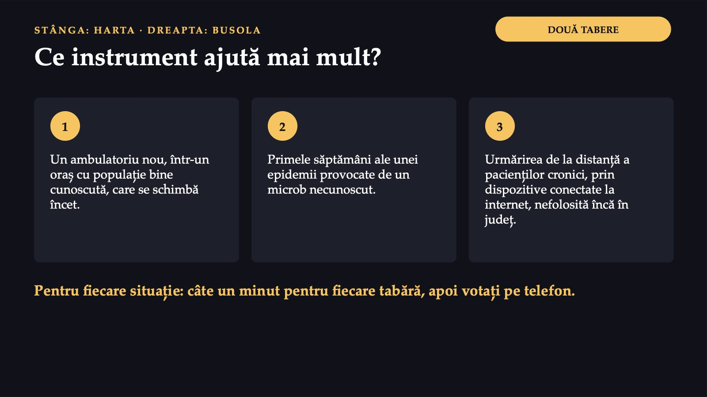
25 / 45Partea stângă apără harta, partea dreaptă apără busola. Pentru fiecare situație, fiecare tabără spune de ce instrumentul ei este mai util; apoi toată sala votează.
Instrumentul depinde de teren
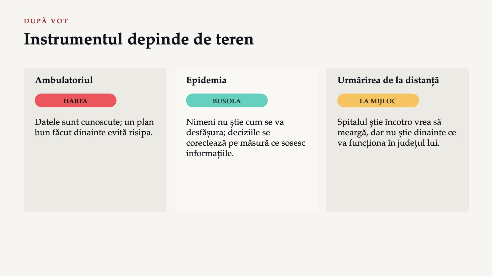
26 / 45Pentru ambulatoriul dintr-un oraș stabil, harta are avantaj. În primele săptămâni ale unei epidemii necunoscute, busola are avantaj. Urmărirea pacienților de la distanță se află la mijloc.
25
![UN EXEMPLU ROMÂNESC Finanțarea calității în spitale 25 de indicatori naționali de calitate, adoptați de Ministerul Sănătății în 2023. 2022 un mecanism finanțat prin Planul național de redresare și reziliență, cu asistența tehnică a OMS 2023 setul național de indicatori apoi testare în șase spitale acum extindere la spitalele de stat care doresc să participe Direcția, stabilită dinainte: harta Aplicarea, învățată pe parcurs: busola Sursa: OCDE și Observatorul European, Country Health Profile 2025: Romania.](diapozitive/C01/027.jpg) 27 / 45
27 / 45Mecanismul recompensează spitalele pentru îmbunătățiri măsurabile ale calității. Direcția a fost stabilită dinainte: harta. Felul în care se aplică a fost învățat pe parcurs, prin testare și extindere: busola.
Un ceas sau un oraș?
![Traficul unui oraș: nimeni nu dirijează fiecare mișcare Sursa: foto ProtoplasmaKid · CC BY-SA 4.0 · Wikimedia Commons SPITALUL NU ESTE UN CEAS Un ceas sau un oraș? Sursa: foto Emdx · CC BY-SA 3.0 · Wikimedia Commons Ceasul: o rotiță stricată se înlocuiește, iar mișcarea întregului se poate prevedea exact. Spitalul seamănă cu traficul: oameni liberi să acționeze în moduri nu întotdeauna previzibile, ale căror acțiuni sunt legate între ele. Un sistem viu, care se adaptează continuu. Surprizele sunt permanente. Sursa: Plsek și Greenhalgh, BMJ, 2001 (o idee apropiată la Ginter, Duncan și Swayne, 2018).](diapozitive/C01/028.jpg) 28 / 45
28 / 45Multă vreme, organizațiile au fost conduse după imaginea ceasului: problema mare se împarte în bucăți mici, iar fiecare bucată se optimizează separat. Paul Plsek și Trisha Greenhalgh au susținut că sănătatea nu funcționează așa. Medicii, asistentele, pacienții, familiile, casa de asigurări și medicii de familie reacționează unii la alții.
Cine altcineva simte efectul?
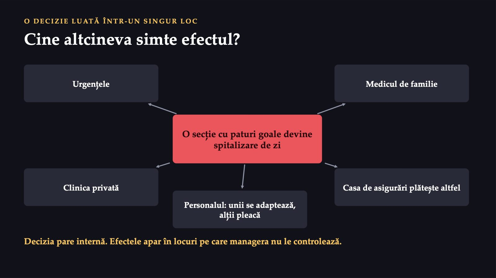
29 / 45Dacă managera transformă o secție cu paturi goale în spitalizare de zi, decizia pare internă, de o singură secție. În realitate, pacienții care veneau la acea secție vor merge în altă parte: la urgențe, la medicul de familie, la clinica privată.
Ca mai puțini pacienți vârstnici să ajungă la urgențe: de cine depinde reușita, în afară de spital?
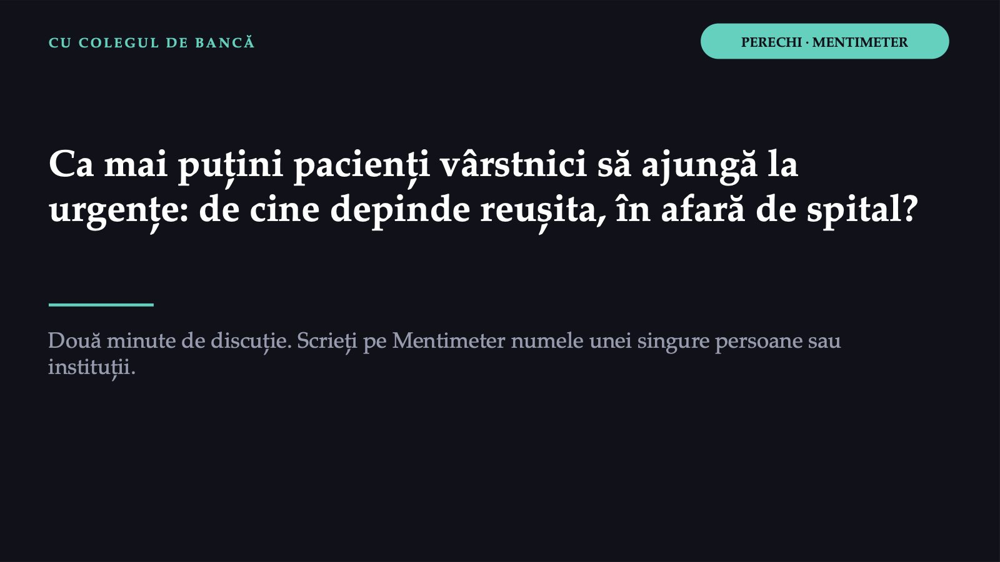
30 / 45O persoană sau o instituție, una singură. Răspunsurile apar pe ecran.
Aliați în afara zidurilor spitalului
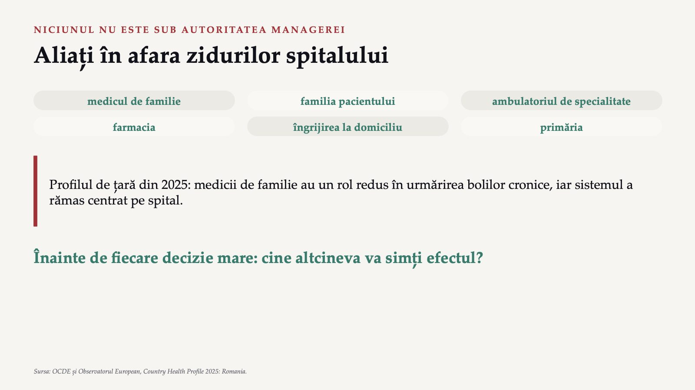
31 / 45Perspectiva întregului sistem ajută echipa de conducere să vadă imaginea de ansamblu, să observe legăturile importante dintre părți și să caute soluții largi.
Procesul strategic
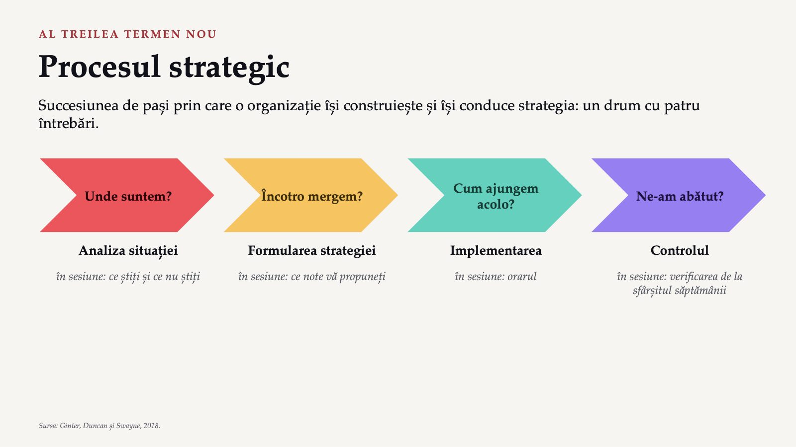
32 / 45Managera știe acum de ce are nevoie de o strategie și știe că planul ei va fi corectat pe drum. Rămâne întrebarea practică: cum se face, concret, o strategie? Manualul descrie un drum cu pași care se repetă.
Trei priviri, în trei direcții
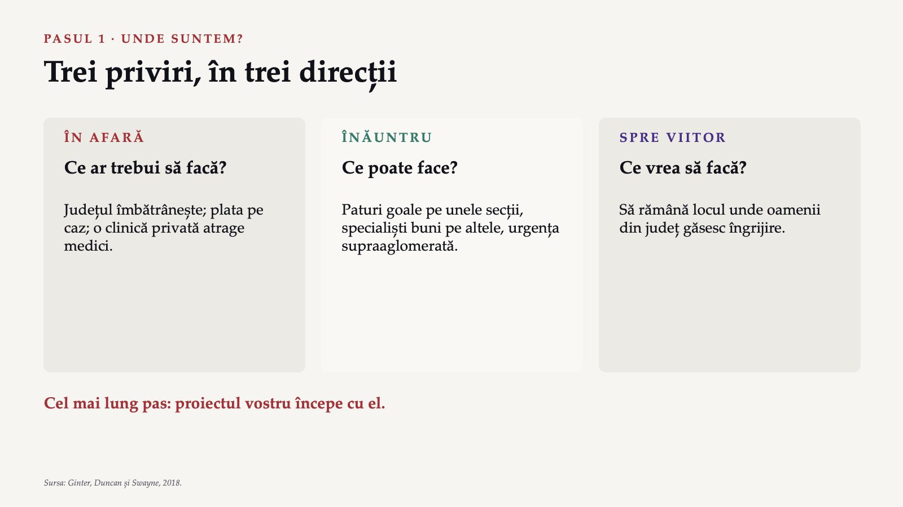
33 / 45Cele trei răspunsuri se suprapun și, împreună, devin punctul de plecare pentru formularea strategiei. Cursurile din săptămânile următoare iau primul pas pe bucăți: mediul extern, concurenții, mediul intern.
Trei întrebări despre tot ce face organizația
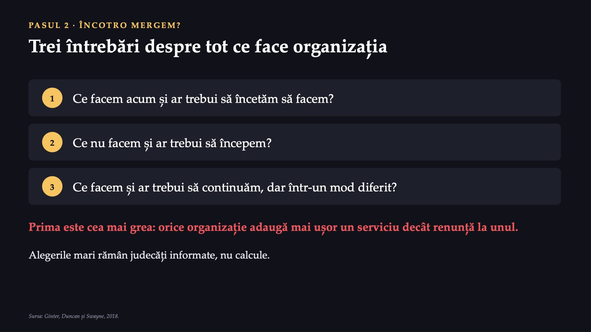
34 / 45Al doilea pas este formularea strategiei: organizația își imaginează mai multe variante, le cântărește și o alege pe cea pe care o va urma. În general, cu cât decizia este mai importantă, cu atât se poate măsura mai greu și cu atât depinde mai mult de o judecată informată.
Ce ar trebui să înceteze spitalul județean să facă?
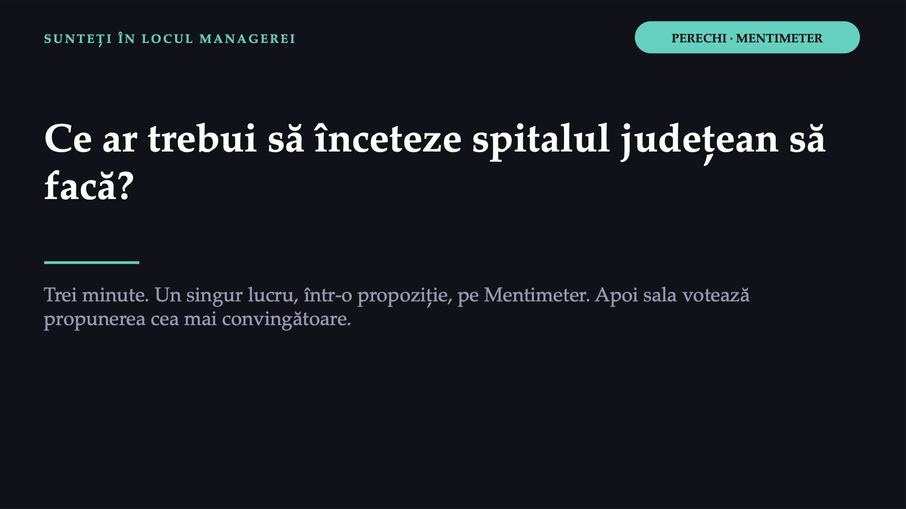
35 / 45Alegeți un singur lucru și scrieți-l într-o propoziție.
O regulă pentru deciziile mici
 36 / 45
36 / 45Manualul leagă direct planul strategic de aceste orientări pentru decizii, pentru că ele permit ca oameni diferiți, în momente diferite, să aleagă în aceeași direcție. Un plan scris numai de director întâmpină greutăți la aplicare, pentru că nimeni nu îl simte ca fiind al său; cheia este ca grupul care îl pregătește să se întâlnească regulat.
A controla înseamnă a ține direcția
![PAȘII 3 ȘI 4 A controla înseamnă a ține direcția Implementarea: alegerile devin pași, responsabili și termene. Controlul: prea mult poate produce birocrație, prea puțin poate lăsa organizația fără direcție: „cu cât mai puțin, cu atât mai bine”. TREI SEMNE URMĂRITE LUNAR 1 pacienți cronici reveniți la urgențe 2 folosirea paturilor pe secții 3 așteptarea pentru o consultație Implementarea slabă sau lipsa unui control adecvat au lăsat multe planuri fără nicio valoare. Sursa: Ginter, Duncan și Swayne, 2018.](diapozitive/C01/037.jpg) 37 / 45
37 / 45Cuvântul control nu are aici sensul de inspecție sau de pedeapsă. Echipa de conducere stabilește direcția și îi lasă pe oameni să decidă cum ajung acolo. O strategie care nu este condusă activ nu se realizează.
Un eveniment anual, nu un proces
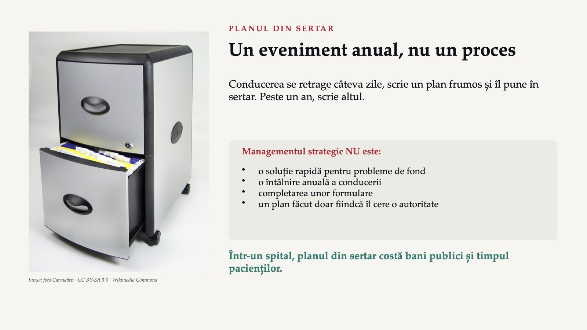
38 / 45Un autor citat de Ginter, Duncan și Swayne, Alan Weiss, o rezumă astfel: strategia devine un exercițiu anual, un eveniment care produce un document, nu un proces prin care organizația este condusă. Studenții cunosc fenomenul din sesiune: orarul făcut cu entuziasm în prima zi și uitat în a treia.
Paturile unei secții devin spitalizare de zi
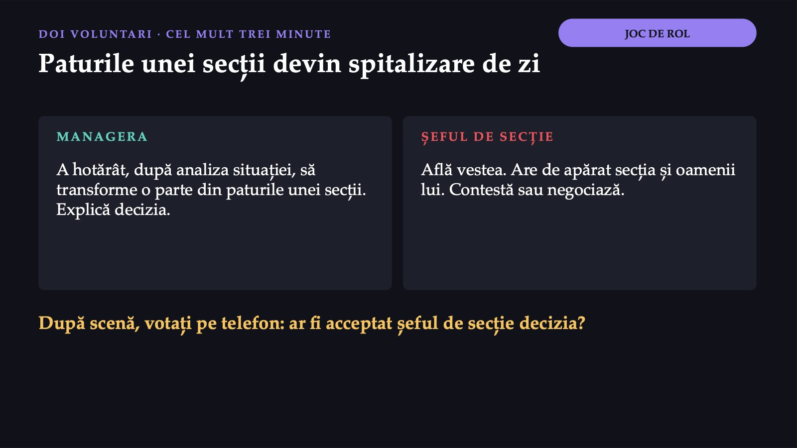
39 / 45Primul voluntar joacă rolul managerei, al doilea rolul șefului de secție, care află vestea și are de apărat secția și oamenii lui.
Aici, managementul strategic devine conducere
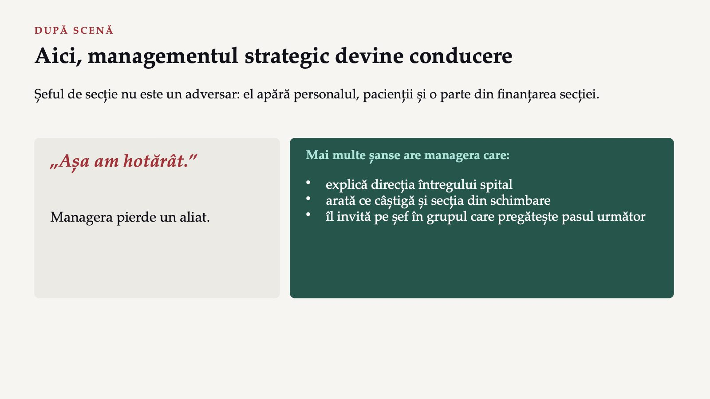
40 / 45Decizia corectă pe hârtie se poate lovi de oameni care au motive bune să o refuze.
Management și leadership
 41 / 45
41 / 45Manualul pune responsabilitatea principală pentru strategie la echipa de conducere și, în primul rând, la directorul organizației. Leadershipul, pe care acest curs îl numește conducere strategică, urmărește schimbarea. Un șef de secție, o asistentă-șefă sau un student într-o echipă de proiect pot exercita, însă, conducere strategică. Fiecare angajat ar trebui să știe cum contribuie munca lui la obiectivele organizației.
Testul de la final
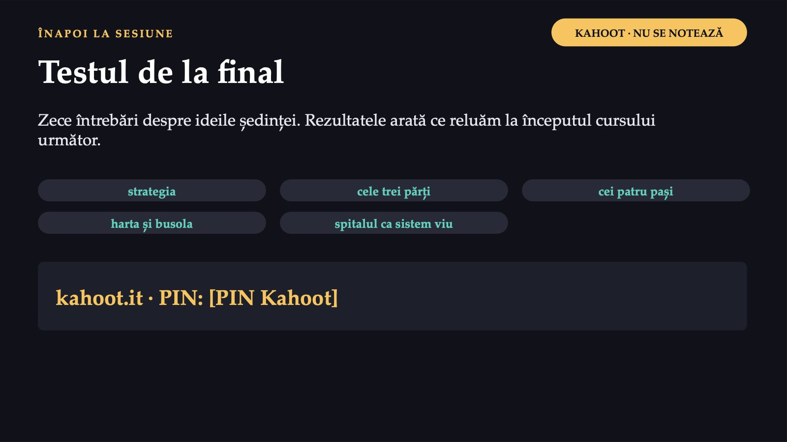
42 / 45Test formativ pe Kahoot, despre ideile ședinței: strategia, cele trei părți ale managementului strategic, cei patru pași ai procesului strategic, harta și busola, spitalul ca sistem viu. Testul nu se notează.
Ce vă vine acum în minte când auziți cuvântul „strategie”?
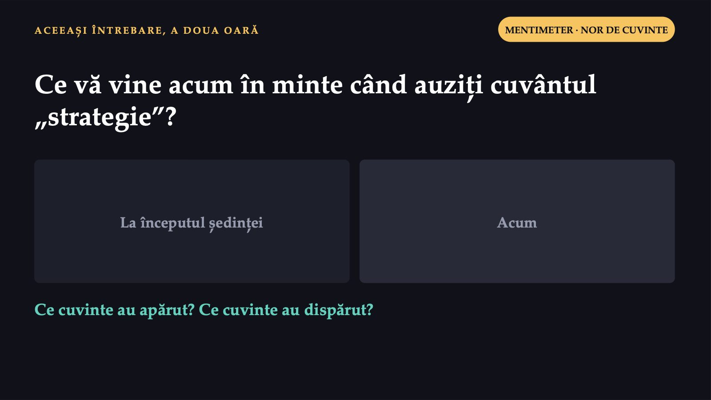
43 / 45Un singur cuvânt, ca la început. Cuvintele care apar numai în al doilea nor sunt punctul de plecare pentru recapitulare.
Ce faceți diferit
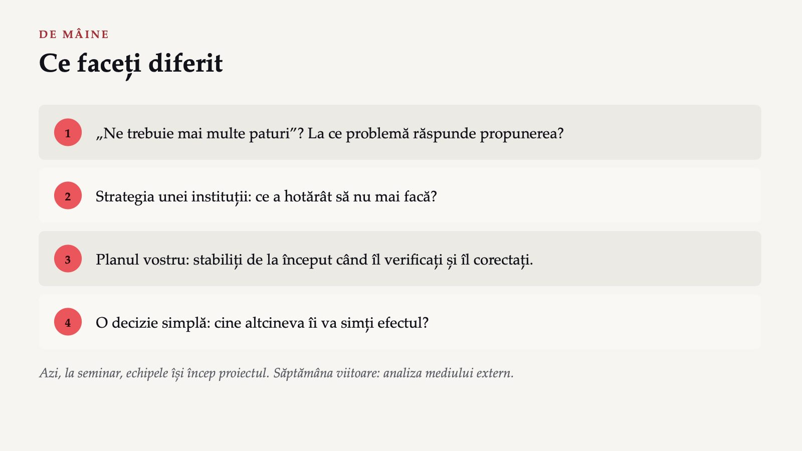
44 / 45O strategie ajută ca deciziile mici să urmeze aceeași direcție, chiar atunci când le iau oameni diferiți. Între plan și realitate apare, de cele mai multe ori, o distanță, de aceea harta și busola sunt amândouă necesare. Proiectul echipei voastre urmează aceiași pași ca procesul strategic din această ședință.
Trei întrebări pentru final
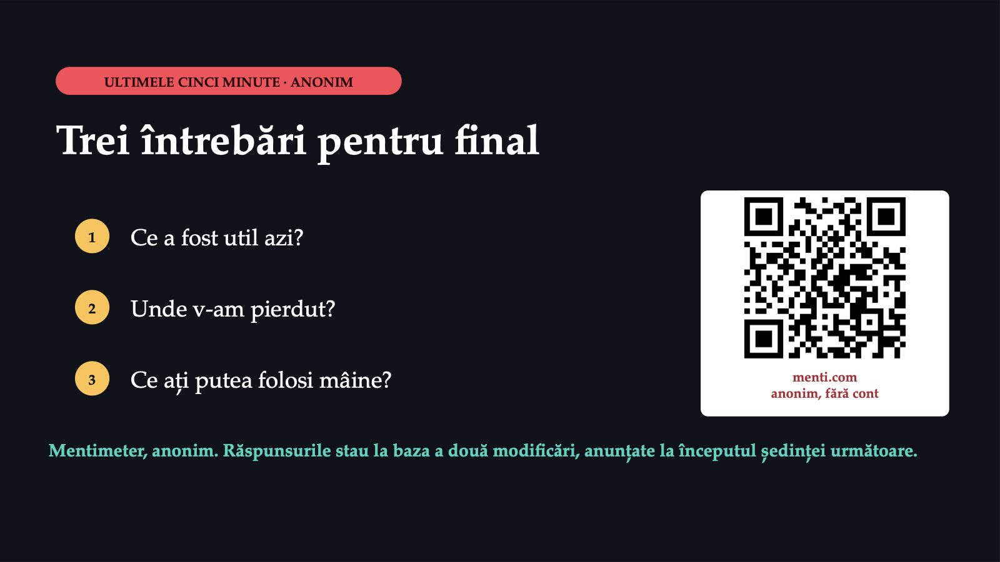
45 / 45Trei întrebări, anonim, pe Mentimeter, prin codul QR. Răspunsurile stau la baza a două modificări, anunțate la începutul ședinței următoare.
Săgeți sau spațiu: navigare · O: vedere de ansamblu · N: notele prezentatorului · F: ecran complet · Esc: închidere